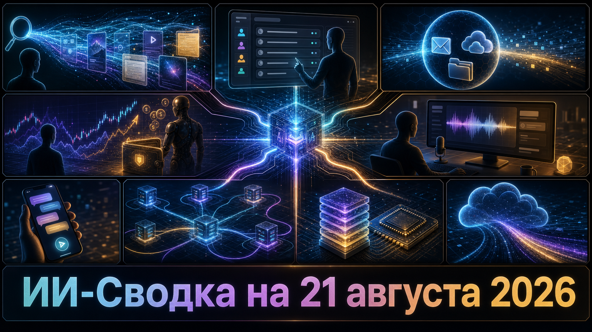

Повестка дня показывает, как ИИ переходит от ответов и подсказок к действиям в личных сообщениях, торговых операциях и разработке программного обеспечения. Одновременно конкуренция всё сильнее смещается к инфраструктуре доступа: выбору источников в поиске, маршрутизации между LLM, корпоративному распространению моделей и технологиям памяти.
Важный сдерживающий сигнал пришёл из кибербезопасности: исследователи описали цепочку атак на подключённого ассистента Microsoft Copilot. Она напоминает, что права агентов на доступ к данным и внешним сервисам требуют отдельных, проверяемых контуров контроля.
Google сделала доступной для издателей встраиваемую кнопку Preferred Sources. Через неё читатель может указать, какие издания хочет чаще видеть в Google Search, Discover и Google News; по данным TechCrunch, механизм уже распространяется и на AI Mode с AI Overviews.
Это продуктовый ответ на проблему потери прямого трафика медиа из-за ИИ-поиска: у пользователя появляется способ явно выбрать предпочитаемый источник. Однако эффект для посещаемости и масштаб использования ещё не доказаны — речь пока о механизме выбора, а не о гарантии возврата аудитории издателям.
В релизе Codex CLI rust-v0.149.0 OpenAI добавила интерактивный dashboard для поиска, запуска, открытия, переименования и остановки задач агентов. Согласно официальному релизу OpenAI Codex, также появилась очередь сообщений для существующих локальных и удалённых сессий, а в интерфейсе доступны команды управления рабочей директорией.
Обновление приближает CLI-инструмент к среде управления несколькими длительными задачами, а не только к диалогу с одним помощником в терминале. В релизе заявлены и усиления профилей разрешений, ограничений для MCP и sandbox-механизмов; это важно, поскольку рост автономности кодинговых агентов повышает цену ошибочных прав доступа.
Исследователи Varonis описали CoSnitch — цепочку уязвимостей Microsoft Copilot Personal, которой присвоен CVE-2026-24301. Как сообщает TechRadar, атака могла объединять автоматическое выполнение инструкции из специально подготовленной ссылки, доступ к авторизованным подключённым приложениям и внедрение инструкций через веб-страницу.
В техническом разборе Varonis Threat Labs указывает, что вредоносный контекст мог сохраняться в памяти ассистента, а подключённые Gmail, Drive или Calendar — использоваться для извлечения данных в рамках предоставленных пользователем прав. Microsoft, по данным исследователей, выпустила серверное исправление 18 августа; свидетельств эксплуатации в реальных атаках Varonis не обнаружила. Сюжет важен как пример того, почему согласие на подключение сервисов не должно считаться безусловным разрешением для действий, инициированных внешним текстом.
Binance представила Agent OS — платформу, которая подключает приложения и агентов ИИ к торговой, платёжной, кошельковой и верификационной инфраструктуре биржи. По данным TechCrunch, система поддерживает MCP и может работать с ChatGPT, Codex, Claude Code и Cursor; пользователь способен разрешить агенту анализировать данные счёта и совершать сделки через выделенный субсчёт.
Binance заявляет о настраиваемых правах и подтверждениях операций, а вывод средств с торговых субсчетов по умолчанию заблокирован. Но отдельного ограничения убытков или объёма сделок внутри пополненного субсчёта, как отмечает издание, платформа не вводит. Это один из наиболее прямых случаев выхода агентов ИИ в операции с реальными деньгами, где защита от prompt injection и контроль полномочий становятся частью потребительской безопасности.
Meta представила приложение Meta AI для macOS. По информации TechCrunch, оно предлагает системную диктовку в разных приложениях и может отвечать на вопросы с учётом содержимого текущего экрана, используя модель Muse Spark.
Компания также добавила возможности для малого бизнеса: подключение аккаунтов Meta, рекламных кампаний и Google Workspace к Meta AI. Продукт расширяет присутствие ассистента в сценариях работы с компьютером и несколькими приложениями, но независимого тестирования точности, региональной доступности и настроек приватности в доступном материале нет.
OpenAI запустила плагин Apple Messages для ChatGPT. Как пишет TechCrunch, после подключения входящих сообщений пользователь может искать и анализировать переписку, редактировать, создавать, отправлять и удалять сообщения; интеграция также доступна для Codex и ChatGPT Work.
По сообщению издания, OpenAI предупреждает: при включении постоянного разрешения на отправку сообщений финальная проверка перед отправкой исчезает. Компания заявила Bloomberg, что плагин работает локально и не создаёт индекс всей переписки, однако технические детали, региональная доступность и практические гарантии приватности раскрыты не полностью. Для рынка это заметное расширение ChatGPT от советника к исполнителю действий в частном канале коммуникации.
Финтех-компания Ramp представила Router — API-сервис для доступа к нескольким поставщикам LLM и выбора модели под конкретный запрос. По данным TechCrunch, сервис поддерживает модели OpenAI, Anthropic, DeepSeek, Moonshot, MiniMax, Nvidia, xAI и Z.ai, а также предлагает стратегии маршрутизации и панели расходов с задержками.
На старте Router доступен только в США и не берёт отдельную плату до конца 2026 года, не считая стоимости инференса. Важная оговорка для корпоративных клиентов: Ramp по умолчанию хранит входные данные, ответы моделей и вызовы инструментов один год, хотя от этого можно отказаться. Рынок маршрутизации становится самостоятельным инфраструктурным слоем, но политики хранения данных нужно оценивать не менее внимательно, чем цену и качество модели.
Micron объявила о создании Micron Research Labs в Бойсе, штат Айдахо, и о долгосрочной инвестиции в $10 млрд. Как сообщает Data Center Knowledge, исследования охватят технологии памяти, объединение памяти и вычислений, advanced packaging и будущие технологии производства полупроводников; строительство площадки планируется начать в 2027 году.
Это не подтверждённый запуск фабрики или немедленное увеличение выпуска HBM-памяти, а программа исследований на длинном горизонте. Но она важна для ИИ-инфраструктуры: производительность современных ускорителей всё сильнее ограничивается пропускной способностью, ёмкостью и физической близостью памяти к вычислительным блокам. Micron намерена объединить собственные разработки с университетами, государственными структурами, стартапами и отраслевыми партнёрами.
xAI объявила о доступности Grok 4.6 через Amazon Bedrock. В сообщении xAI модель названа флагманской для длительных агентных задач, интерактивной и визуальной работы; заявлены контекстное окно в 500 тысяч токенов и четыре уровня усилия рассуждений.
AWS подтверждает доступность модели в регионах Bedrock и возможность использовать корпоративные механизмы мониторинга, журналирования и межрегионального инференса. Это не оригинальный выпуск Grok 4.6, а существенное расширение канала распространения: организации, уже работающие с Bedrock, получают модель в привычных контурах IAM, биллинга и контроля данных.
*Meta и ее сервисы - в России запрещены